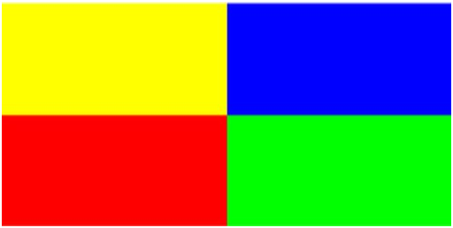
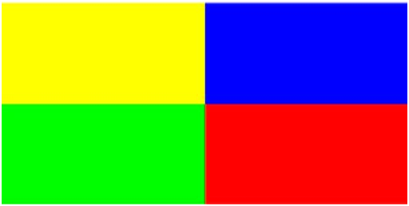
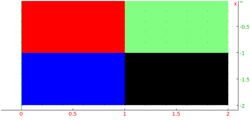
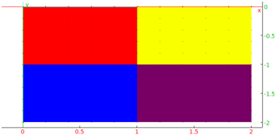
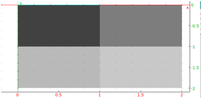

15.3.4 Creating or recreating images: writergb
The writergb command writes images to png files; the
image can be given by the Xcas image structure
(see Section 15.3.1, this is what is read in with
readrgb) or a simplified version of this structure.
To write an image given by the Xcas image structure to a file:
-
writergb takes two arguments:
-
filename, a file name.
- image, an image in Xcas format.
- writergb(filename,image) writes the
image image to the file filename.
Examples
-
Assume the the following image is stored in file
image1234.jpg.

After reading it into a variable name with readrgb:
Input:
a:= readrgb("image1234.jpg")
the variable a will contain a list,
-
a[0] will be [4,250,500], the number of
channels, the height and the width of the image.
- a[1], the red channel,
- a[2], the green channel,
- a[3], the transparency channel,
- a[4], the blue channel.
Then:
Input:
writergb("image2134.png",[a[0],a[2],a[1],a[3],a[4]])
Output:

and the image file image2134.png will be created.
This image is simply image1234.png with the green and red
colors switched.
- For simple cases, you can type the Xcas image format in by
hand.
Input:
| writergb("image1.png",[[4,2,2],[[255,0],[0,0]],[[0,255],[0,0]], |
| [[255,125],[255,255]],[[0,0],[255,0]]])
|
Output:

The transparency value of 125 for the upper right point makes
it partially transparent and mutes the color.
- For larger images, in some cases the matrix operations of
Xcas can be used to create the channels.
Input:
| writergb("image2.png",[[4,300,300],makemat(0,300,300),makemat(0,300,300), |
| makemat(255,300,300),makemat(0,300,300)+idn(300)*255])
|
Output:
The simplified version of the Xcas image description doesn’t
involve stating the number of channels, the size of the image, or the
transparency. There is a full color version of this simplified form
and a grayscale version.
To create a full color image using the simple description:
-
writergb command takes four arguments:
-
filename, the name of the file to store the image.
- R, a matrix for the red channel.
- G, a matrix for the green channel.
- B, a matrix for the blue channel.
- writergb(filename,R,G,B)
draws the image given by the matrices to the file filename.
Example
Input:
writergb("image2.png",[[255,250],[0,120]],[[0,255],[0,0]],[[0,0],[255,100]])
Output:

This image will be in the file image2.png.
To create a grayscale image using the simple description:
-
writergb command takes two arguments:
-
filename, the name of the file to store the image.
- M, a matrix representing how dark each point is (where
0 is black and 255 is white).
- writergb(filename,M)
draws the image given by M to the file filename.
Example
Input:
writergb("image3.png",[[65,125],[185,200]])
Output:

This image will be in the file image3.png.